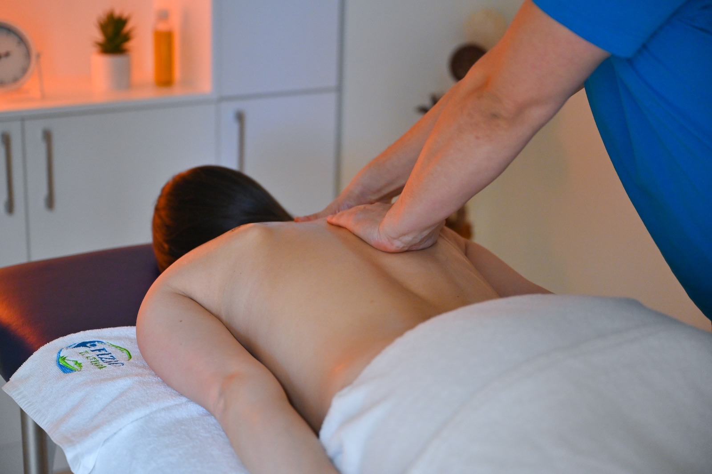
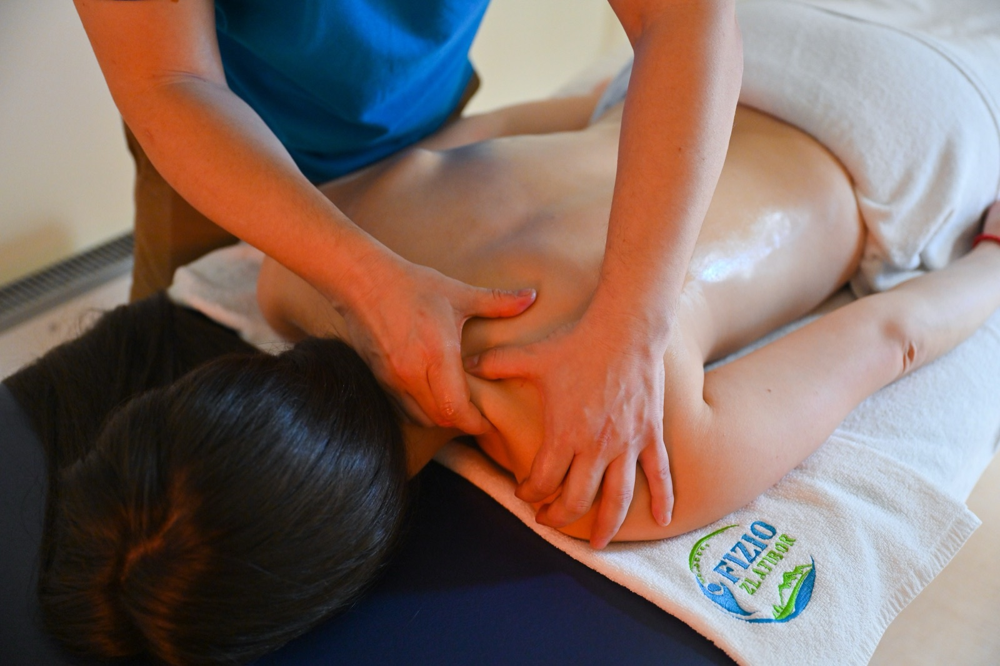
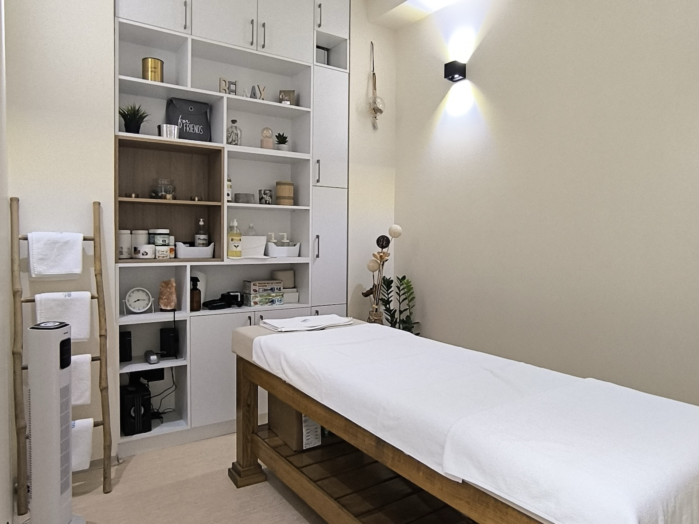

Profesionalna masaža — sat vremena samo za vaše telo
Nekima trebaju mirne, duge poteze posle teške nedelje. Drugima jake ruke koje će razraditi „zategnut" vrat ili kvrgu u trapezijusu. Trećima kurs anticelulit ili maderoterapije za vidljivu razliku na koži. Sve to radimo ručno, jedan na jedan, sa pritiskom koji u svakom trenutku podešavamo prema vama.

Vrste masaže koje radimo
Sve vrste mogu biti parcijalne (samo leđa, samo vrat i ramena, samo noge) ili celokupne. Pre prve sesije u kratkom razgovoru dogovorimo šta vam najviše treba.
Relax masaža
Duge, spore poteze, srednji pritisak, smirena muzika. Najbolja je kad osećate da ste „prepuni" — stres, neispavanost, vrat i ramena „od ekrana", napetost u glavi. Posle ovakve sesije većina ljudi spava bolje istu noć. Možete birati celokupnu (60–90 min) ili samo gornji deo tela (30–45 min).
Sportska masaža
Čvršća, dublja, fokusirana na mišićne grupe koje najviše rade — noge kod trkača i biciklista, leđa i ramena kod plivača i tenisera, kvadricepsi kod skijaša. Pre takmičenja radimo kraću, „aktivirajuću" varijantu; posle treninga ili meča dužu, „regenerativnu" — protiv „uštinutosti", mlečne kiseline i sutrašnje krutosti. Pomaže i u prevenciji povreda.
Terapijska masaža
Ciljana, najčešće čvršća, na konkretno bolnom mestu — krsta, vrat, rame, trapezijus. Radimo trigger‑tačke (čvoriće u mišiću koji „pucaju" pod prstom), miofascijalnu tehniku (rad sa fascijama, vezivnim tkivom oko mišića) i pasivno istezanje. Često je nadogradnja na fizioterapiju između termina sa terapeutom.
Anticelulit masaža
Čvršća, ritmična, sa fokusom na butine, kukove i zadnjicu. Koža posle prve sesije obično deluje malo crvenkasto i toplo — to je znak da cirkulacija radi. Pravi efekat na teksturu kože (manje „pomorandžine kore", glađa površina) gradi se kroz kurs od 8–12 tretmana, uz redovan unos vode i kretanje.
Maderoterapija
Tehnika sa drvenim alatkama (oblutak, čaše, ploče) preko ulja ili kreme. Drvo radi ono što ruka teško može — drenira tečnost, „oblikuje" konture i tretira tvrdokornu teksturu kože. Snažnija je od klasične anticelulit masaže; vole je i sportisti zbog dubinske drenaže i klijenti koji žele vidljivo glatkiju, čvršću kožu.
Parcijalne i celokupne seanse
Ne morate uzeti celo telo ako vam treba samo jedno. Kratke parcijalne sesije (vrat i ramena, leđa, noge) traju 30 minuta i taman su za pauzu u toku dana. Celokupna masaža je 60 ili 90 minuta — sa više pažnje na regije koje vi izaberete.
Za koga je masaža
Krug je širok — ne morate biti sportista ni „povređeni" da biste došli. Evo nekoliko tipičnih situacija u kojima ljudi kažu da im masaža najviše znači.
Svakodnevni stres i posao
- Kancelarijski tip posla — ukočen vrat, ramena i gornji deo leđa
- Dugi vozači i česti putnici (auto, avion, autobus)
- Tenzione glavobolje od loše posture i ekrana
- Hroničan stres, loš san, osećaj „prepunjenosti"
- Mame posle porođaja (uz dozvolu ginekologa)
- Svako kome jednostavno treba mirnih sat vremena za sebe
Sport, oporavak i estetika
- Rekreativni sportisti — oporavak između treninga
- Pripreme i regeneracija oko takmičenja
- Oporavak od manje povrede (kada fizijatar/terapeut dozvoli)
- Bol u krstima ili vratu koji „dolazi i prolazi"
- Želja za glatkijom, čvršćom kožom na butinama i stomaku
- Drenaža i oblikovanje uz kurs maderoterapije

Šta se postiže
Najkraće: manje bola, manje napetosti, bolji san, brži oporavak i — kod estetskih tipova — glađa i čvršća koža. Posle prve sesije gotovo svi izađu „lakši"; trajnije promene (bolji ten kože na butinama, manje bola u krstima, manje glavobolja) grade se kroz serije tretmana. Masaža se odlično kombinuje sa fizioterapijom, vežbama i presoterapijom.
Kako planiramo i koliko traje
Polazni okvir — sve podešavamo prema vašim ciljevima, osetu i tipu masaže koji izaberete.
- Trajanje sesije
- 30 / 60 / 90 minuta
- Pritisak
- podesiv u svakom trenutku
- Relax / wellness
- 1× nedeljno
- Terapijska / sportska
- 2–3× nedeljno u serijama
- Anticelulit / maderoterapija
- kurs 8–12 tretmana
- Ulja i kreme
- hipoalergena, prilagođena vama

Šta da očekujete
Pre tretmana kratko popričamo — šta vas „muči", kakav vam je dan, da li ima skorašnjih povreda ili alergija. Svučete se do nivoa koji je vama prijatan i legnete pod čaršav/peškir — pokrivamo vas tokom cele sesije i otkrivamo samo region na kome trenutno radimo. Soba je topla, muzika tiha. Posle, popijte čašu vode. Kod sportske, terapijske i maderoterapije sasvim je normalno da sutradan osetite blagu „radnu" osetljivost u mišićima — slično kao posle treninga.
Kada masaža nije za vas
Recite nam unapred ako: imate temperaturu ili aktivnu infekciju, sveže ste operisali tu regiju, imate svežu povredu sa modricom ili otokom (prvo led, masaža dolazi kasnije), imate ili ste skoro imali tromb (DVT) ili upalu vene, imate aktivno stanje kože na predelu masaže (ekcem, otvorena rana), izrazite proširene vene (radimo prilagođeno ili izbegavamo zonu), trudni ste (radimo posebne, „pregnancy‑safe" tipove — prvo se konsultujemo), ili ste u aktivnom onkološkom lečenju (samo blagi tipovi i uz dozvolu lekara). Pre prve sesije postavljamo nekoliko kratkih pitanja — sigurnost je uvek prva.